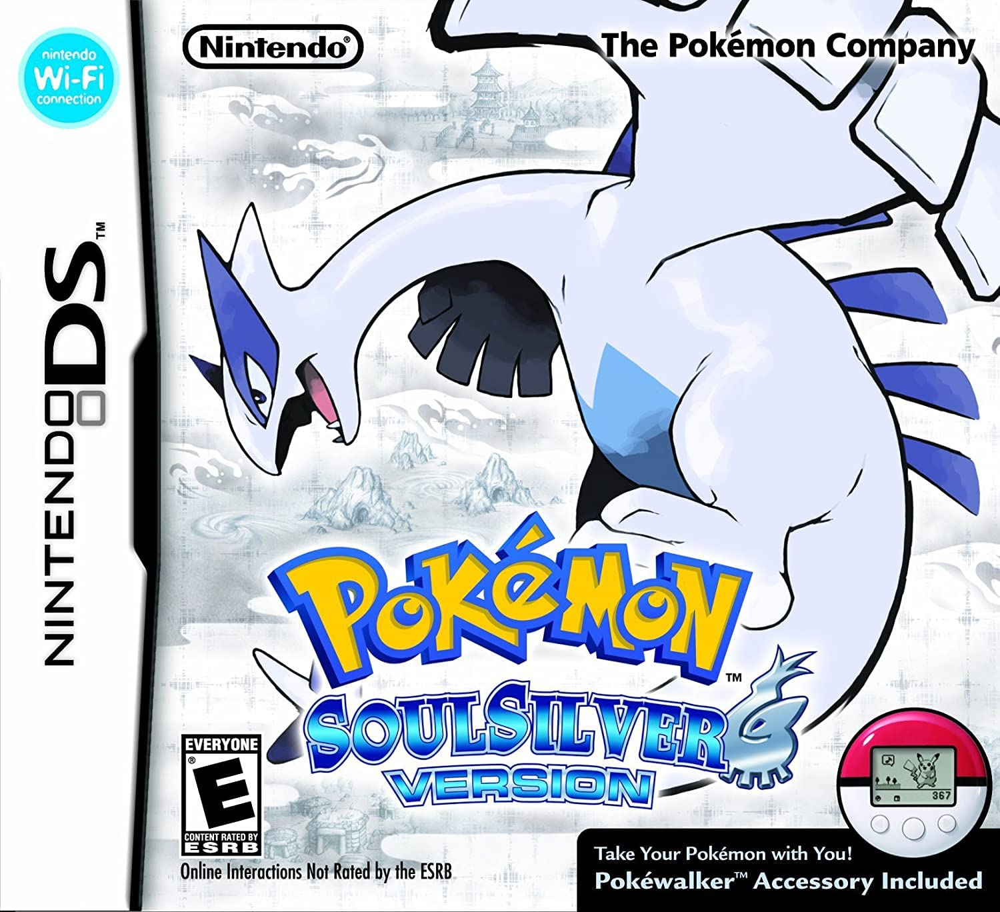
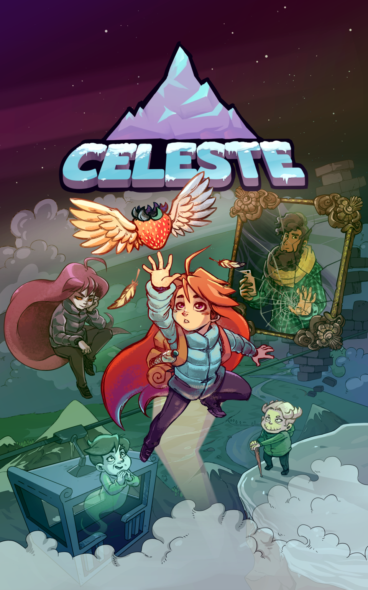
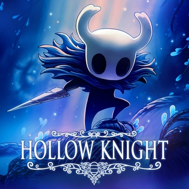
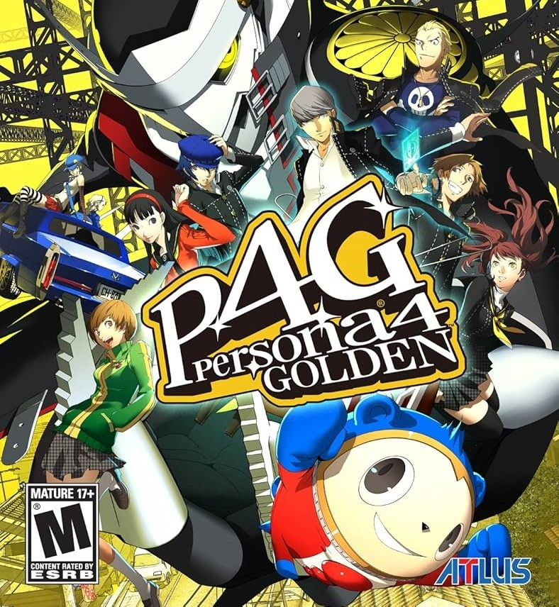
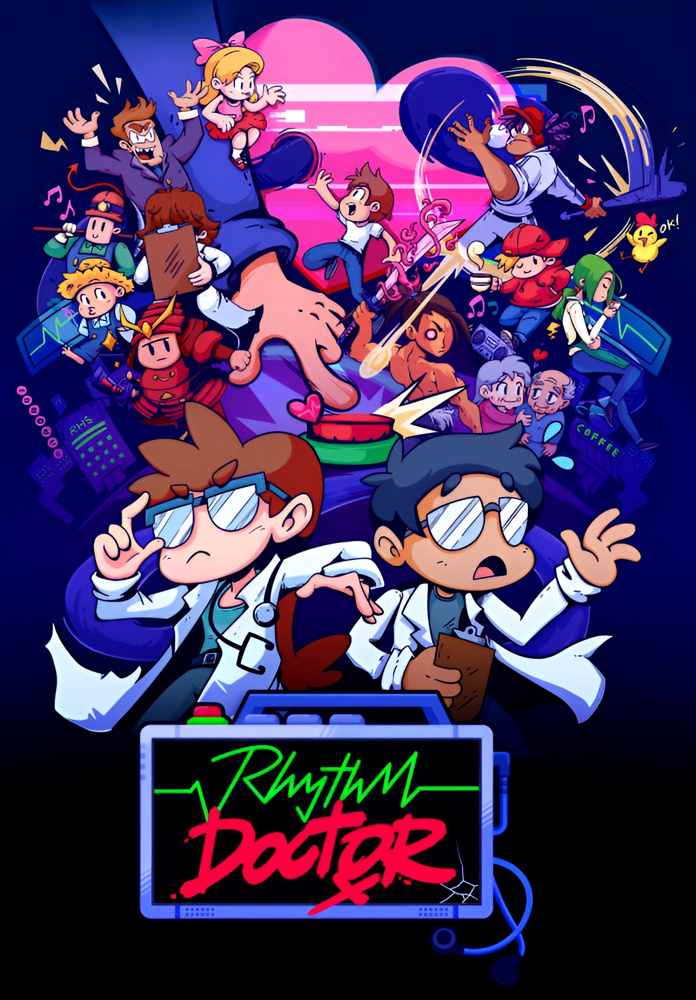
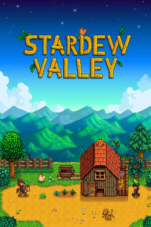
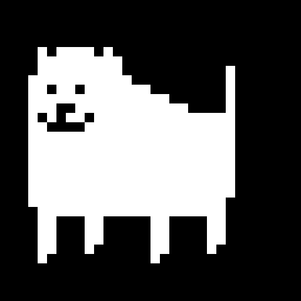

when classes aren't happening, i play a lot of video games - these are some of my favorites!

i have been a diehard fan of pokemon since i was probably 5 years old. the first game i owned was soulsilver (i lost my game card) with a pokewalker (that i also lost). i've played pretty much every mainline pokemon game, and i also really love the spinoff games. my favorite spinoffs are the pokemon ranger games and pokemon mystery dungeon games. i really love gens 2, 4, 5, and 7! i gravitate towards grass types and bug types but i have pokemon i like of all types and i could go on forever about them (but i won't). some of my favorite pokemon are dunsparce, meganium, leafeon, meowscarada, primarina, and darkrai! i also like to play pokemon fangames (which gamefreak allows, as long as they're not for profit) when classes aren't going on (otherwise i neglect school). the newest generation's starters were revealed on pokemon day last month, and i'm so excited for the new game!
celeste is one of the games that got me into pc games! for most of my life i pretty much exclusively played games on nintendo consoles (gameboy, ds, 3ds, wii, etc) which meant i didn't really know any games that my peers liked. i played celeste on the nintendo switch, but i liked it enough to download and make a steam account to get it on my laptop too! it's a really good game you should play it and the soundtrack goes so hard. if you've played minecraft, lena raine (who made the ost for celeste) is the one who wrote pigstep, and there are alternate levels with really good music too (my favorite is the celestial resort good karma mix). the game is also just very personal and touching, centered around self-loathing, self-sabotage, and accepting the worst and most insecure parts of yourself. the game itself is also just really beautiful; even though it has a simple pixel art style, the environments are colorful and complex. the platforming and physics are really fun, and the game has harder versions of the levels that are so satisfying to nail once you've mastered the controls.


if you play games and you haven't heard about hollow knight or silksong at this point, you must live under a rock. hollow knight is a game released in 2017, and was made by a team of four people who were crowdfunded. i didn't play it myself until 2020, but it's an immersive experience that really sucks you in. hollow knight is what people call a "metroidvania", a genre named after the games metroid and castlevania. the key features of a metroidvania are a large expansive map with areas locked behind different progression items, and a nonlinear story. hollow knight: silksong released in october of last year to record-breaking sales, and follows a side character from hollow knight as she navigates a new world. both games have real-time combat that requires a lot of focus, but the games are also quite different in the way that the characters traverse their environment, which is a nice touch. the games also have beautiful soundtracks arranged by christopher larkin.
nine sols is another metroidvania, one that came out in 2024 but i only played at the very end of 2025. being a metroidvania, it's similar in many aspects to hollow knight, but i actually enjoyed it more than hollow knight. the combat is built around parrying enemy attacks, which forces you to be observant and react quickly. it has a sci-fi, chinese-inspired fantasy setting that shows in every aspect of the environment which i really love.


i've seen playthroughs of persona 5 royal, so i decided to give persona 4 golden a try two years ago while it was on a huge sale. i then proceeded to play it every single day for over 20 consecutive days. having played persona 3 reload as well, persona 4 golden remains my favorite of the three persona games on pc. the characters have so much charm, and the game captures the small, rural town vibe well. as a jrpg (jpanese role playing game) it is very long, but it's totally worth it i promise! one save, beginning to end, took me ~100 hours cumulatively. this game is a bit divisive with persona fans, but it has a lot of spirit that i feel the other two don't have. i feel like you really become friends with the members of your little squad, and they feel like they're all friends with each other as well, which is what i felt was lacking in the other two persona games i've experienced. the game is criticized for handling queerness especially atrociously, but i hope that atlus rectifies this when it gets a remake soon!
i first saw this game when i watched a youtuber play it while i was in high school, but i decided to buy it and play it for myself because it was in early access and not fully complete. rhythm doctor is a rhythm game, which is a broad category of games where to succeed, you have to do things in time with the beat. in rhythm doctor, you have to press the space bar on each seventh beat, which sounds a little confusing, but it's really just the fourth downbeat because even numbered beats are upbeats! it makes more sense if you were a band kid lol. each level gives you a grade at the end, which makes you want to play and replay and replay until you get an S+. the songs are the basis of any good rhythm game, and i can happily report that the songs do, in fact, slap. levels came out sporadically, but the game officially came out of early access late last year, but i haven't had the chance to see what's new yet. while the narrative isn't really the selling point of rhythm games, this one has a really nice one following both the doctors and their patients' lives and struggles.


as my caption suggests, some people play stardew valley as a chill, cozy way to unwind. i am not one of those people. intrinsically, i cannot be one of those people. each time i start a new save, i am laser-focused on getting a greenhouse and nothing can stop me (except poor luck, maybe). i do not believe in "crop rotation" or "community" or any of that garbage. i wake up, water my plants, and go to the mines or fish for the rest of the day and i have spoken to each of the townspeople maybe twice in the course of the entire save. during spring, i grow strawerries, during summer, i grow blueberries, and during fal, i grow cranberries, on the sole basis that these are the most profitable crops. unfortunately this is just the way i am, HOWEVER i have sunk about 300 hours cumulatively in this game and it is so much fun. a lot of people call it a cozy farming sim but i think that, truly, the game is what you make of it and to me it is serious business. there are a lot of similar games with the same vibe, of those i've only played a few but i also really liked moonstone island! that one has more of a focus on combat with card-based turn-based combat, a la hearthstone.
i don't know how well known undertale and deltarune (abbreviated as utdr) are to the general populace, but they're both games made by toby fox (who represents himself with the silly little dog on the right). undertale came out the day after my 11th birthday (september 15, 2015) and was a huge hit right from the start. me and my friends in elementary school were obsessed with it; we would roleplay (in real life) as characters from the game. deltarune is a game that's not exactly a sequel of undertale, but features many of the same characters in what fans believe is a parallel universe. both games are insanely good, with beautiful music and really fun characters (my favorite character is mettaton, and my favorite undertale song is "death by glamour", a song that plays when you fight him!). deltarune is coming out episodically so there are a lot of fan theories about the game and its plot, and it has some really sick music as well! i really like the tracks "GUARDIAN" and "raise up your bat".


wizard of legend is a rogue-like game, centered around repeated runs that are likely to die, training yourself with each revursive loop, until you succeed. it's similar to the game hades, which i would also recommend. i got really into this game during my second year of college, during which i would play it on my laptop during physics lectures instead of paying attention. oops! to be fair, the gameplay loop is really addicting, and it's so satisfying overcoming difficult obstacles.